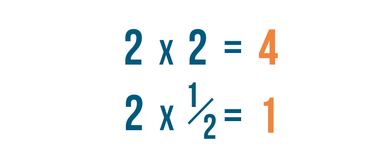

Temel Yeterlilik Testi (TYT) Nedir?
Bu yazımda konumuz matematikte temel kavramlar. Rakam (Matematiğin Alfabesi): 0, 1, 2, 3, 4, 5, 6, 7, 8, 9 gibi tek haneli sembollere rakam denir. 10 tane rakamımız vardır ve sayıları yazmak için rakamları kullanırız. Rakamları Türkçedeki harflere benzetebiliriz. Nasıl harfleri kullanarak kelimeler oluşturuyorsak Matematikte de rakamları kullanarak sayıları oluştururuz. Sayı: Rakamların tek başlarına veya bir çokluk oluşturacak şekilde bir araya gelmesiyle oluşan ifadelere sayı denir.

Matematik Nedir?
Matematik bir gereksinmedir. Yaşamın bir parçasıdır. Yaşamın her evresi matematiktir. Doğru düşünme kurallarını öğretir. Düşünce ile somut kavramlar arasında bağıntı kurar. Sosyal ve bilimsel gelişme sürecini çabuklaştırır. İnsan zekasını geliştirir.
İnsanlar arasındaki bir takım gereksinmelerden matematik doğmuştur. Tarihi incelersek, ilk çağlarda bile bugün bilgisayarlarda kullanılan ikili sistemin Mısır aritmetiğinde kullanıldığını görürüz. Yine o çağlarda dairenin çevresini, Nil Nehri'nin taşma zamanlarını saptamak için mevsimleri ve böylece 365 günü içeren takvimlerin hazırlandığını belirleriz.
TYT Matamatik
YKS sınavının 1.oturumu olan Temel Yeterlilik Testi için konuları paylaşıyoruz. Sınava çalışmaya başlamadan önce hangi konulardan sorumlu olduğumuzu öğrenmekte fayda var. TYT Matematik testi 40 sorudan oluşmaktadır. ÖSYM bu testin içerisinde her sene ortalama olarak 31-32 soru Matematik, 8-9 soru ise Geometri sorusu sormaktadır.

Tıkla Konu
- Temel Kavramlar
- Sayı Basamakları
- Bölme ve Bölünebilme
- EBOB – EKOK
- Rasyonel Sayılar
- Basit Eşitsizlikler
- Mutlak Değer
- Üslü Sayılar
- Köklü Sayılar
- Çarpanlara Ayırma
- Oran Orantı
- Denklem Çözme
- Problemler
- Kümeler
- Kartezyen Çarpım
- Mantık
- Fonskiyonlar
- Polinomlar
- 2.Dereceden Denklemler
- Permütasyon
- Kombinasyon
- Olasılık
- İstatistik
Copyright © 2021 Designed by Who'ScaRe